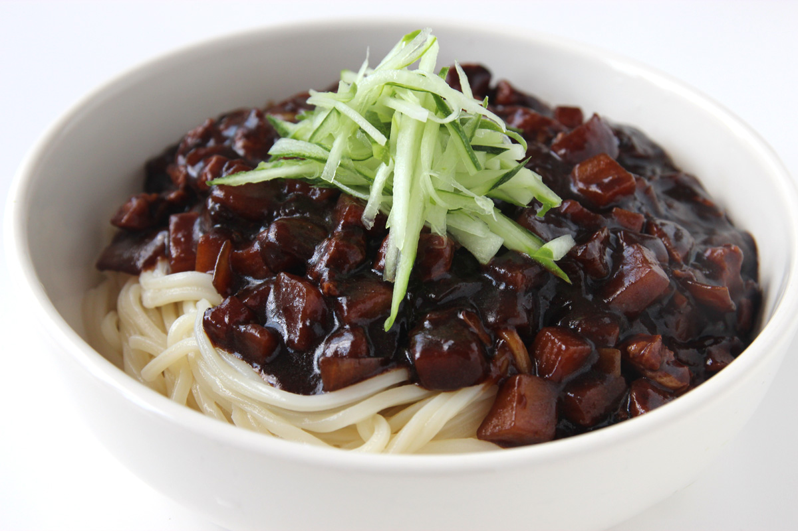

Jjajjangmyeon (Korean Noodles)

A korean staple. These noodles are unique and many haven't tried it outside of Korea. Give this dish a try to get a taste of something truly special!
Ingredients
- 1 cup of potato
- Noodles of your choice
- 1 cup of chopped pork
- 1 tbs of black bean paste
Directions
- Boil the noodles while frying up the pork alongside onions
- Once noodles are done, take out the water and add in the black bean paste
- Add the onions and pork to the noodles and mix it all well til it looks like the image above
Back To Top
Back to Main Menu